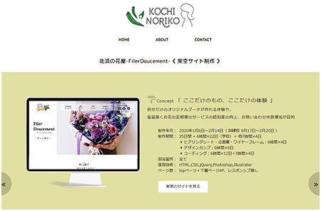
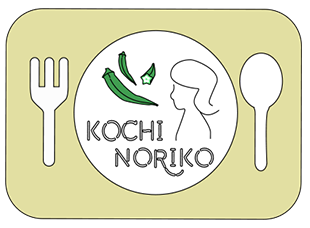

Concept 「 シンプルで、分かりやすく 」
就職活動をするにあたり、ポートフォリオサイトを作成しました。
- 制作過程 -


忙しい採用担当の方にポートフォリオを見てもらうにあたり、
短時間でも見れるように、トップページに作品を配置しました。
作品数も全てを載せるのではなく、
自分が納得して完成させられた作品を選びました。
作品の詳細ページには、一覧に戻ることなく前後の作品が見れるよう、
「前の作品へ戻る」「後ろの作品へ進む」というボタンを設置しました。
上部の部分を見ただけでも最低限のことが伝わるように
意識して作成しました。
Design・Color
見やすいように余計な項目を入れず、シンプルなデザインを心がけました。
メインビジュアルには、自分で撮影した写真を使用しました。
ホワイトをベースに、自然を連想させるベージュと緑で、
ナチュラルな配色になるよう選びました。
ロゴはillustratorで作成しました。
前職が栄養士なのと、食べることが大好きなのが
伝わるようなロゴにしました。
大好物のオクラを入れました。